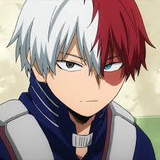

Shoto Todoroki (轟とどろき焦しょう凍と Todoroki Shōto?) é um deuteragonista de My Hero Academia. É filho de Endeavor e amigo de Izuku Midoriya.As características físicas mais notáveis na aparência de Shoto é o seu cabelo branco e vermelho, seus olhos preto e azul e uma queimadura no lado esquerdo do rosto.Half-Cold Half-Hot (半冷半燃 Hanrei Hannen?): A individualidade de Shouto dá a habilidade para ele congelar qualquer coisa com seu lado direto e queimar com o lado esquerdo.